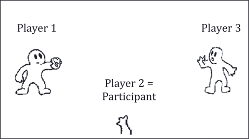
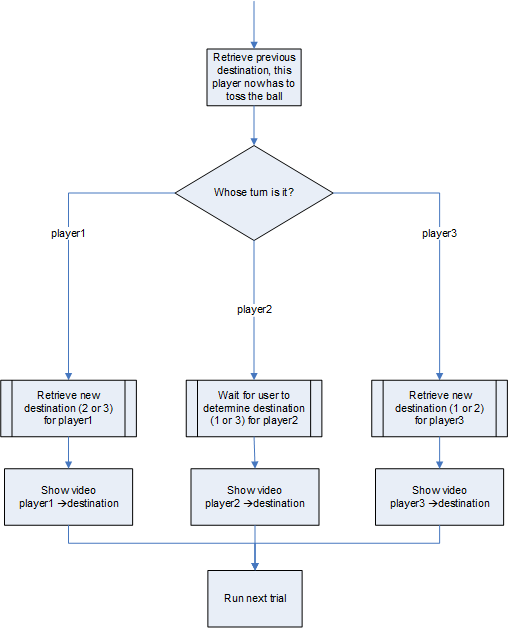
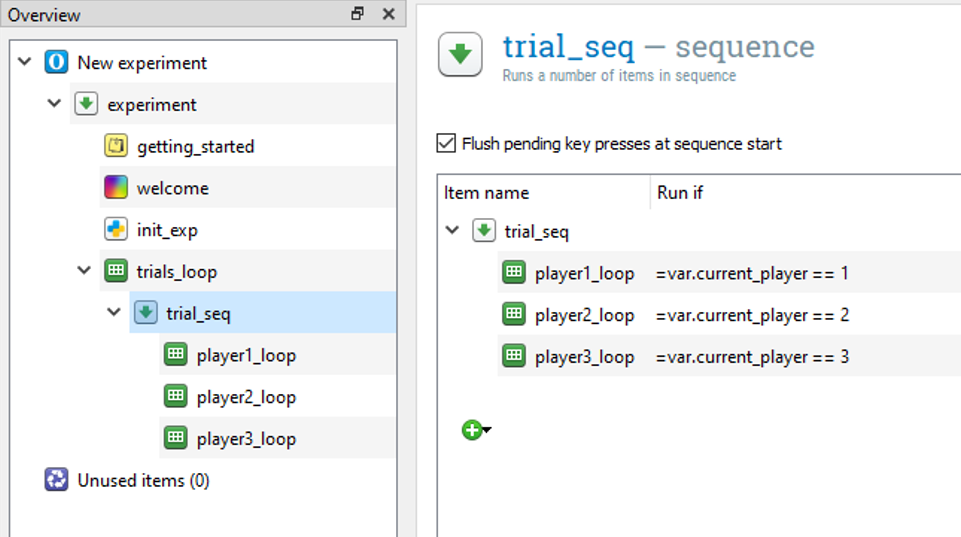
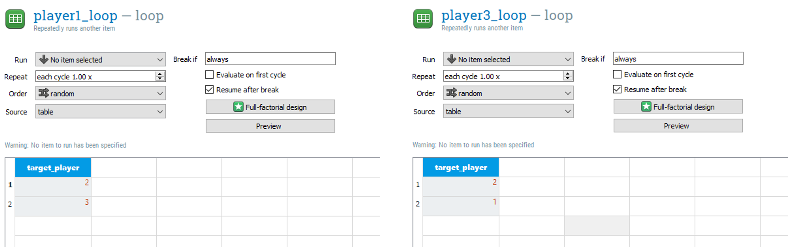
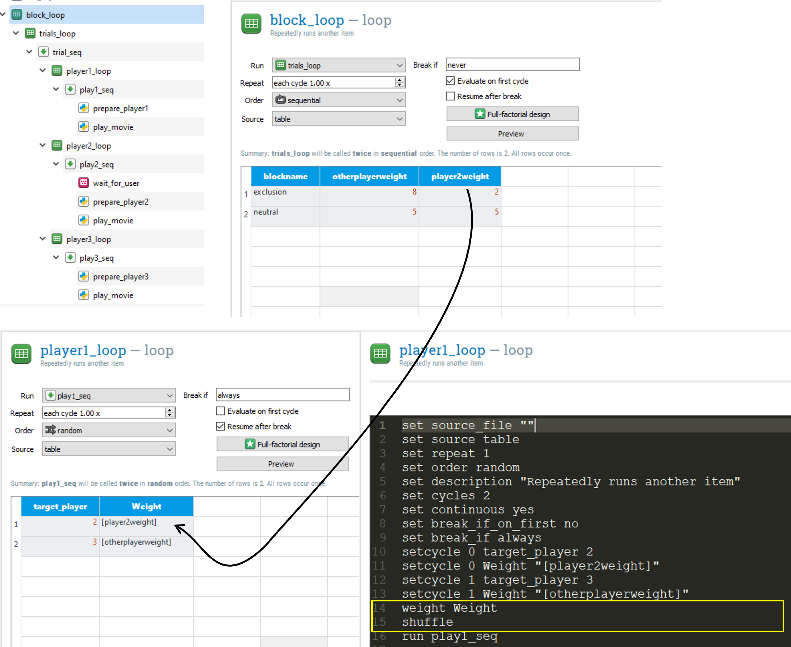

The Cyberball game in OpenSesame
Contents
The Cyberball game in OpenSesame¶
Note: Part of the text below is adapted from The E-Primer (Spapé, Verdonschot, & van Steenbergen, 2019). Spapé M.M., Verdonschot, R.G., & van Steenbergen, H. (2019) The E-Primer: An introduction to creating psychological experiments in E-Prime. Second edition updated for E-Prime 3. Leiden: Leiden University Press. www.e-primer.com Copyright 2019 by the authors and LUP. Adapted with permission.
from jupyterquiz import display_quiz
Introduction¶
The Cyberball game allows psychologists to investigate the effects of social exclusion (ostracism). Kipling D. Williams came up with this idea after a Frisbee rolled up and hit him in the back when relaxing in a park in 1983:
He turned around, saw two other guys looking at him expectantly, and threw the Frisbee back to them. He was a bit surprised when they threw the disk back to him; he walked toward them to form a triangle, and threw it back again. For about a minute, the three of them threw the Frisbee around in a spirited game of catch. What happened next sparked an idea as to how to study the effects of ostracism. For no apparent reason, the two original players started throwing the Frisbee only to each other, and never threw it to the newcomer again. After sheepishly back-stepping toward his dog, the author was amazed at how bad he felt. He was sad, embarrassed, and a bit angry. He wondered what he had done to warrant being ostracised by the other two players. He sought comfort from his faithful dog. Then, it occurred to him that something like this, adapted for the laboratory, would be an excellent means to study ostracism and social exclusion. (Williams & Jarvis, 2006, p.174).
These are the instructions participants usually receive:
“Welcome to Cyberball, the Interactive Ball-Tossing Game Used for Mental Visualisation!
In the upcoming experiment, we test the effects of practising mental visualisation on task performance. Thus, we need you to practise your mental visualisation skills. We have found that the best way to do this is to have you play an on-line game of catch with other participants who are logged on at the same time.
In a few moments, you will be playing a game of catch with other students over our network. The game is very simple. When the ball is tossed to you, simply use the keyboard to indicate the player (with numerical key 1 or 3) you want to throw it to. When the game is over, the experimenter will give you additional instructions.
What is important is not your ball tossing performance, but that you MENTALLY VISUALISE the entire experience. Imagine what the others look like. What sort of people are they? Where are you playing? Is it warm and sunny, or cold and rainy? Create in your mind a complete mental picture of what might be going on if you were playing this game in real life.
Okay, ready to begin?”
This is what the game looks like at the start:

Step 1: Programming the basic experimental flow¶
To program the game, you first need some movie clips that show a ball moving between the players. You need six of them depicting all possible directions:
From player 1 to player 2 1to2.wmv From player 1 to player 3 1to3.wmv From player 2 to player 1 2to1.wmv From player 2 to player 3 2to3.wmv From player 3 to player 1 3to1.wmv From player 3 to player 2 3to2.wmv
The six movie files can be downloaded using the links.
Note that these small Windows Media Files have been converted from the original animated gifs that are freely available on K.D. Williams’ website.
Now let’s draw the basic flow chart for each trial, which determines which movies should be played when:

This flow chart basically decides who is throwing the ball in this trial (Player 1, Player 2, or Player 3) and, by retrieving the values from a variable (column) from the OpenSesame Loop object (see next step), it will decide the destination of the ball.
Let’s create the entire experiment from scratch and use the ‘default template’, which is already loaded when OpenSesame is launched. You can simple delete the ‘Get started!’ and copy paste the introduction described above in the welcome sketchpad.
Also, make sure you download and add all six video files mentioned above to the File pool first. Also, set the back-end of the experiment to legacy.
At any moment during the experiment we need to have access to the information about which player currently has the ball. So, create a new variable named current_player with the initial value 1, in a new inline_script called init_exp at the beginning of your experiment procedure (the game always starts with Player 1 throwing the ball). As shown here:
var.current_player = 1
Now you can implement the basic branching structure using conditional via the run-if statement of the sequence.
Depending on the value in current_player, the script may run one single trial in either player1_loop, player2_loop, or player3_loop. In order to do so, we make use of a combination of loops run in a trial_seq. Build a basic setup running 60 trials, as in the example below. Some of you may realize already that with this solution there can be multiple throws in one trial; let’s forget about this issue for now and fix it later, i.e. in Exercise 1).

Note that we used the Python syntax for the conditional statements. You can also use the OpenSesame syntax again in which case you omit the =var. and instead use square brackets around the variable name.
display_quiz("questions/question_1.json")
Step 2: Programming the behaviour of Player 1 and Player 3¶
Let’s now think about how to set up the player1_loop and player3_loop. These loops should retrieve the new destination that the virtual Players 1 and 3 will toss the ball to. So add a variable (column) in both loops named target_player and type in the possible destinations of that player (a player is not allowed to toss the ball to themselves! It would be an interesting extension of the paradigm, though…).
These loops fully determine the behaviour of Player 1 and Player 3. It’s up to you whether you want to make this behaviour predictable (use sequential selection), fully random (use random selection), or preferential (increase the number of rows of specific target players).
The example below implements a very predictable and non-preferential playing style for both players.

display_quiz("questions/question_2.json")
Now let these loops run a sequence called play1_seq and play3_seq that contain an inline_script (name the scripts prepare_player1 and prepare_player3 respectively) and a subsequently presented media player media_player_mpy.
Make sure you use the same media player object in both sequences (Hint: use the Copy (linked) - Paste feature using right mouse button clicks in the Overview area).
Hint: the media player object is available under the Visual stimuli header, at the bottom of the Toolbar (if you have a small screen resolution, it might be hidden under the small arrows pointing down).
Edit the media_player_mpy object in the following way:
Refer to the variable
movie_filenamein the Video file fieldSet the Duration property to
soundso that this object is presented for the entire duration of the video
Finally, give the variable movie_filename the initial (temporary) file name “‘1to2.wmv” in the init_exp script. So add the following line there:
var.movie_filename = "1to2.wmv"
Now, add this code in PreparePlayer1:
var.movie_filename = "1to" + str(var.target_player) + ".wmv"
var.current_player = var.target_player # info for next trial
items.prepare("media_player_mpy")
display_quiz("questions/question_3.json")
This script overwrites the temporary filename in the MovieDisplay with the correct filename. The second line is also very important. Here, the value of the variable current_player is updated to the new destination, so that in the next trial the branching structure knows who is at that moment the current_player. Finally, because of the prepare-run strategy in OpenSesame, the temporary filename was used to prepare the media player at the start of the trial. To make sure the media player is updated and shows the proper file, we manually prepare it again using the items.prepare command.
Almost the same code should be added to the PreparePlayer3 InLine:
var.movie_filename = "3to" + str(var.target_player) + ".wmv"
var.current_player = var.target_player # info for next trial
items.prepare("media_player_mpy")
Step 3: Programming Player 2¶
Let’s now add a Procedure named play2_seq to the player2_loop. We don’t need any variables added to this loop. Just make sure the loop run only once.
Do the same for play2_seq as you did for play1_seq and play3_seq : add an inline script (name it prepare_player2) and insert the media player media_player_mpy(again paste a linked copy from the clipboard).
Now add a keyboard_response object to the beginning of the sequence (name it wait_for_user) and set it to log the responses 1 and 3. The keyboard_response object has an infinite timeout and will be terminated as soon as the user has decided which player they want to toss the ball to (i.e. Player 1 or 3).
To show the correct movie after the response to the wait_for_userobject, we need the following code in the prepare_player2 script:
var.movie_filename = "2to" + str(var.response) + ".wmv"
var.current_player = var.response # info for next trial
items.prepare("media_player_mpy")
Done! Compare the structure of your experiment with the flowchart. You should now be able to play the Cyberball game. Use the “Run in window” feature and open the Variable inspector while your experiment runs. Check whether the variables movie_filename and current_player are properly updated.
Alternative solution: Custom code to play the movie¶
Although OpenSesame does have the standard media_player_mpy object to play a movie, you may notice that it does not work flawless. For example, if you are too quick, the response to player 2 is not recorded because there seems to be a small delay at the end of the movie. In addition, at the end of the movie the screen is cleared using the default OpenSesame background color. This creates an annoying screen glitch between movies.
No worries though. We can create our own python code to play a movie where we have full control. However, do not expect this is simple. :)
Save your old experiment and then save it again under a new filename. Now replace the media_player_mpy objects everywhere with a script called play_movie. Also, remove the items.prepare("media_player_mpy") calls from all inlines.
Let’s first create a simple loop that presents something that moves on the screen. This code should be inserted into the play_movie inline script.
my_canvas = Canvas()
for i in range(-25,25):
my_canvas.text(var.movie_filename)
my_canvas.text("*",x = i*5,y = 50)
my_canvas.show()
clock.sleep(40)
my_canvas.clear()
Time to test the experiment. Do you see something moving on the screen? And do you see when it is your (player 2) turn?
Experiment with the settings of the sleep parameter (speed of the asterisk) and the x (horizontal position) and the y (vertical position).
Can you change the vertical position into a quadratic shape so it looks like a ball is thrown?
y = i**2 - 200
Okay, this was boring, right? Time to change the loop and present the movie itself.
First comment the code you just wrote (select everything and press Ctrl + / (see OpenSesame keyboard shortcuts)
Now we first need to load the correct movie file and then present the picture frame by frame in the loop.
Of course, do not reinvent the wheel! Others have provided pieces of code we can recycle. Google is your friend. The example below is adapted from the OpenSesame website.
import cv2
import numpy
import pygame
# Full path to the video file in file pool
path = pool[var.movie_filename]
# Open the video
video = cv2.VideoCapture(path)
# A loop to play the video file. This can also be a while loop until a key
# is pressed. etc.
for i in range(100):
# Get a frame
try:
retval, frame = video.read()
# Rotate it, because for some reason it otherwise appears flipped.
frame = numpy.rot90(frame)
# Flip it (vertically?!), because for some reason it otherwise appears horizontally (!) flipped.
frame = numpy.flipud(frame)
# The video uses BGR colors and PyGame needs RGB
frame = cv2.cvtColor(frame, cv2.COLOR_BGR2RGB)
# Create a PyGame surface
surf = pygame.surfarray.make_surface(frame)
except:
#end of movie
break
# Show the PyGame surface!
exp.surface.blit(surf, (0, 0))
pygame.display.flip()
Were all steps implemented correctly? Check whether the game works using this custom code. Insert a blank sketchpad with duration 0 after the instructions sketchpad to make sure the canvas is not drawn on the previous instruction screen.
Exercises¶
Exercise 1. Fixing the issue of incorrect number of trials¶
Change the number of trials in trial_loop to 1. How many throws do you see? Why are there multiple throws in one trial?
To fix this issue, we have to make sure of value of current_player (for the next trial) is assigned after all three player_loop’s have run. To do so, save the new value of the current_player first in another (temporary) variable, and add a new inline_script object at the end (!) of trial_seq that assigns the new value to current_player.
For example, in the prepare_player1 inline_script change:
var.current_player = var.target_player # info for next trial
into
var.tempcurrent_player = var.target_player # info for next trial
Also modify the other two inline_scripts. Finally, the new inline_script at the end of the trial (i.e., after player3_loop) simply says:
var.current_player = var.tempcurrent_player
Check whether each trial now only contains a single throw.
Exercise 2. Present the video at the center of the screen¶
Let’s move the video to the center of the screen. The upper-left corner is determined by the (x,y) coordinates we provide to exp.surface.blit
In order to determine the correct coordinates we need to know the width and height of the screen resolution currently used in the experiment. For this we can use Open Sesame’s built-in variables var.width and var.height.
To determine the width and height of the video file presented (units are pixels) we need some functionality provided by the cv2 package. Nobody knows this by heart, so let’s google it. When I searched “cv2 height of video”, I found some useful information here.
So let’s save the width and heigth of the video in a separate variable after you called the cv2.VideoCapture command and insert it in the correct location of your script.
videowidth = video.get(cv2.CAP_PROP_FRAME_WIDTH )
videoheight = video.get(cv2.CAP_PROP_FRAME_HEIGHT)
Now, combine the dimensions of the screen (stored in the experimental variables width and height) and the video to determine the upper-left corner position and feed this as coordinates into exp.surfdrive.blit.
exp.surface.blit(surf, ((var.width - videowidth) / 2, (var.height - videoheight) / 2))
Exercise 3. Change the speed of the video¶
As you may have noticed, the speed of the video is currently determined by the speed of your cpu. If you have a very quick cpu the video is presented quicker than if you have a very slow cpu.
Let’s change that. Actually, the wmv contains information about the supposed number of frames that have to be presented in a second (fps = frames per second). Let’s save the fps information:
fps = video.get(cv2.CAP_PROP_FPS)
Use the print method to determine the fps for our video’s. Look in the console for the value.
display_quiz("questions/question_4.json")
Now, we can simply delay the time between each look with 1000 / fps ms within each loop to present the video at a slower rate. Add the following code in the loop that presents the frames:
clock.sleep(1000/fps)
Try whether this works!
Assume you run this code on a very slow or a very fast computer. You will notice that the movie might be presented at a different pace! This is because runnign the code itself also takes time and even a few milliseconds delay can over time accumulate into a distorted presentation.
Because the code that presents the picture also needs some time, we actually need a smarter piece of code that only waits if there is time remaining after all the other works has been done. So we need a function like the clock.tick() described here.
The function below mimics the functionality of the clock.tick method:
def myclocktick(foo):
#inspired by clock.tick
#see https://stackoverflow.com/questions/34383559/pygame-clock-tick-vs-framerate-in-game-main-loop
if var.has(u'prevt'):
diff = ((1000/foo) - (clock.time() - var.prevt) ) - 10
if diff>0:
clock.sleep(diff)
var.prevt = clock.time()
Here, foo is used as a metasyntactic variable or a placeholder for a value that can change.
Paste this code in the Prepare tab of the play_movie inline script. Then, in the Run tab replace the clock.sleep code with the following line:
myclocktick(fps)
Try whether you notice any differences. On slower computers the movie may play more smoothly now.
Exercise 4. Manipulate the level of social exclusion¶
Add a block_loop around the trials_loop that runs two blocks. In one block (the exclusion block), player1 and player 3prefer to play with the other player in 8 out of 10 times. In the other block they have equal preference to play with you (player 2) or the other player.
Hint: you need to set the weight of the rows in player1_loop and player2_loop (see the advanced loop documentation). Make sure you shuffle after the weight command, otherwise the repeats are presented after each other (behavior that is different in E-Prime)!
The figure below illustrates how you can set the weight of the player1_loop (do the same for player3_loop!) by referring to a variable that is defined one level higher in the hierarchy, i.e. in the block_loop. Do not press the Preview button though (it will crash because we do not refer to fixed values for the weighting).

Test whether this works. Do you feel more excluded in the first block then in the second block?
Add a third block that includes you 8 out of 10 times. Does the inclusion make you feel better?
Exercise 5. Alternatives to manually prepare an OpenSesame object¶
Experiment with two alternatives to the items.prepare() method:
1. Dummy loop solution¶
Open the old experiment with the media_player you saved after Step 3. Replace the media_player_mpy with a dummy_loop that runs the media_player_mpy object. Add the column my_movie_filename to the dummy_loop (loop object) and enter the value [movie_filename] in the first row. Change the Video file field of media_player_mpy to [my_movie_filename]. Remove any reference to the items.prepare() command in all inlines. Because the prepare-run strategy is repeated for each loop separately, the movie is updated automatically at the end of the trial. Try whether this solution works.
2. Run-If solution¶
Because we have a limited number of videos to present (six combinations) it might be more elegant to preload all relevant movies in the beginning of the trial and use the Run If feature to only present the video that shows the correct target_player. Open the old experiment with the media_player you saved after Step 3. Remove any reference to the items.prepare() command in all inlines. Use two media_players per trial with fixed filenames. Run only the relevant video depending on the value of target_player using the Run if feature in the play1_seq, play2_seq, and play3_seq sequences.